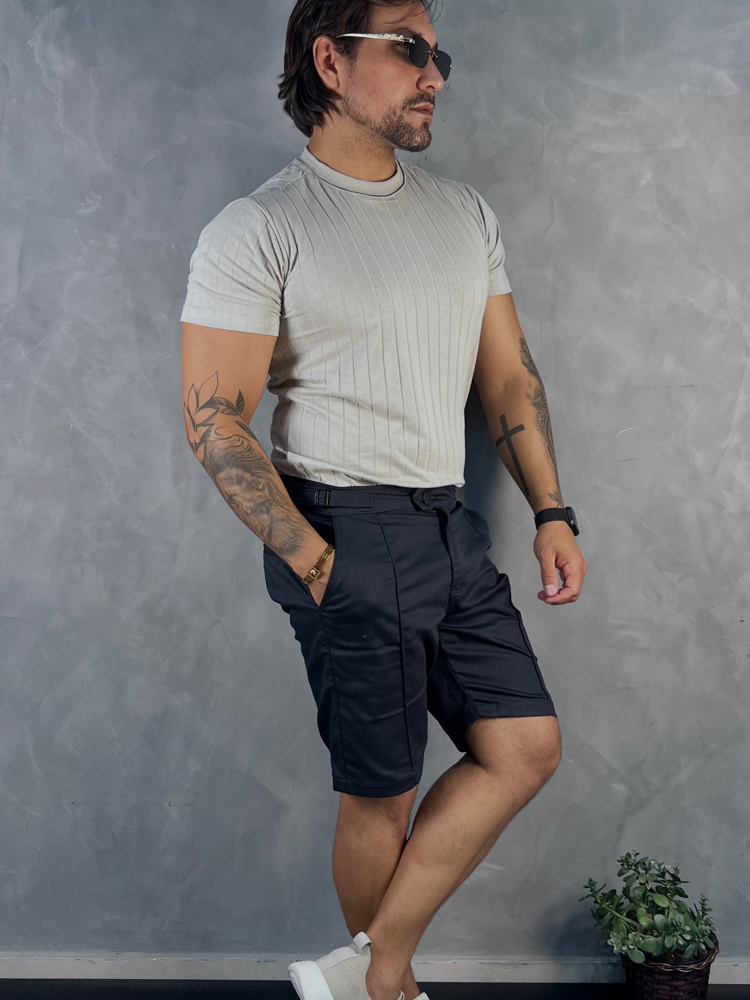

MODA MASCULINA · SÃO PAULO, SP
Vista o que combina
com o seu momento.
Looks contemporâneos, escolhas versáteis e um jeito simples de encontrar sua próxima peça.
DESCUBRA A MR MARCELLO ↓MR MARCELLO · MODA MASCULINA
Tendência
com autenticidade.
Peças versáteis, escolhidas para acompanhar o seu ritmo.
VER PEÇAS
PEÇAS EM PUBLICAÇÕES DA LOJA
Escolhas para
compor seu visual.
Selecione uma peça e consulte a equipe.
Os looks vêm do Instagram oficial da MR Marcello.
Fotos e peças identificadas em publicações da loja. Valores, tamanhos e disponibilidade devem ser confirmados diretamente com a equipe.
IDEIAS DE COMBINAÇÃO
Um look.
Várias possibilidades.
Encontre combinações que funcionam do seu jeito. Selecione as peças que chamaram sua atenção e pergunte à equipe sobre numeração, disponibilidade e preço atual.
ESCOLHER PEÇAS PARA CONSULTA ↗MRM / ESTILO EM MOVIMENTO
MR MARCELLO · MODA MASCULINA
Estilo que
acompanha você.
A MR Marcello apresenta moda masculina casual e contemporânea em São Paulo. Explore os looks compartilhados pela loja e converse com a equipe para descobrir os detalhes de cada peça.
ACOMPANHE A LOJA NO INSTAGRAM ↗Confirme os detalhes
Numeração, cores, valores e disponibilidade são informados pela equipe.
Escolha com calma
Salve as peças que gostou para enviar uma consulta reunida pelo WhatsApp.
Fale com a loja
Receba orientação diretamente da MR Marcello antes de decidir.
PERGUNTAS RÁPIDAS
Antes de escolher.
Adicione as peças à sua lista e envie a consulta pelo WhatsApp. A equipe confirma tamanhos, cores, valores e disponibilidade atuais.
Este conceito não exibe preços, pois os valores atuais precisam ser confirmados pela própria loja. Consulte diretamente a MR Marcello.
Este catálogo ajuda você a descobrir peças e conversar com a equipe. Pagamento, entrega e troca não estão configurados nesta demonstração.
VILA CISPER · SÃO PAULO
Venha conhecer
a MR Marcello.
Av. Olavo Egidio de Souza Aranha, 1845
Vila Cisper · São Paulo, SP · 03822-000
DÚVIDAS SOBRE UMA PEÇA?
Vamos encontrar
seu próximo look.
Fale com a equipe da MR Marcello sobre tamanhos, disponibilidade e valores.
CHAMAR NO WHATSAPP